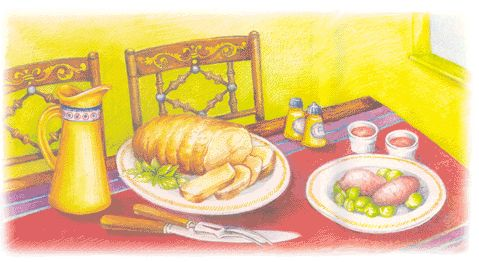

With family members relocating to the Earth's four corners, there are many empty chairs at the Thanksgiving table. Instead of slumping into turkey day doldrums, consider the advantages a small feast has to offer: There's less planning, cooking and cleanup, thus more time for the kitchen crew (me) to watch football. Plus, we have an excuse to break away from the traditional and predictable Thanksgiving fare and eat whatever we desire, not knowing for sure what the Pilgrims ate anyway. We're also free to attend a late-afternoon movie.
Last year, our son decided not to drive his aging Trooper across two states (it already had 150,000 miles on it). My mother-in-law was out of town, and the friends who usually fleshed out our Thanksgiving guest list had made other plans. So we made a lot of phone calls, my husband grilled a rolled turkey breast on the Weber, and we redefined the holiday. And yes, I did use the heirloom china and get out the nice tablecloth.
For the two of us, I bought a naturally raised, three-pound boneless breast.
3-4 lb free-range, naturally raised or organic-rolled turkey breast
2 tbsp olive oil
4 large cloves garlic, peeled and thinly sliced
1 tbsp each fresh rosemary leaves, thyme leaves
4 sage leaves, chopped (optional)
Coarse salt and coarsely ground pepper
Preheat the oven to 350 degrees. Wash the turkey and pat dry with paper towels. If there's a string holding the turkey roll together, leave it on. Place the turkey on a rack or on foil and put it in a baking pan. Rub the turkey with olive oil, then cut small slits all over and insert the garlic slices. Run your thumb and finger down the stems of the herbs to pull off the leaves. Chop the herbs and sprinkle evenly over the meat, and season to taste with salt and freshly ground pepper.
Roast until the meat reads 160 degrees on an instant-read thermometer, about 20 minutes per pound (that's an hour or more for a 3-lb. turkey). Insert a fork to see if the juices run clear and not pink. Roast just until done or the breast will dry out. Let stand 15 minutes before carving. Carve only what you'll use and store the rest in a Ziploc bag or plastic container after the meat has thoroughly cooled.
If you have a covered grill and it's warmer than 30 degrees outside, give grilling a try. Use the indirect heating method as indicated in your grill's manual. Keep the lid on and frequently check the temperature inside the grill with an oven thermometer; it should be around 350 degrees. If the temperature is too hot, the turkey will dry out. Use a disposable drip pan to catch any juices. Feel free to add mesquite chips or fruit wood to add a smoky taste to the meat. The grill cooks faster than the oven, and the turkey will be done before you know it, so check the bird with a meat thermometer. (See above.) Grilling time is about 15 minutes per pound, 45 minutes for a 3-lb. rolled breast. Allow time to rest (the turkey, not you) before slicing.
This is how a friend of mine who hates to cook prepares her sweet potatoes for Thanksgiving:
4-6 medium sweet potatoes
Wash and dry sweet potatoes, arrange them on a foil-lined baking sheet and slip them into the oven about 45 minutes before the turkey is done. Bake until the potatoes are tender. Cover with foil until ready to serve. To eat, slice the potatoes open and garnish with condiments such as butter and a little brown sugar, or enjoy them just as they are.
Here's a faster and fresher-tasting way to prepare brussels sprouts. We buy them on the stalk at the farmer's market. Look for firm, dark-green sprouts without any yellow leaves.
About 1 1/4 lbs. fresh brussels sprouts
1 tbsp olive oil
1 tbsp unsalted butter
2 shallots, chopped
1/2 cup chicken broth
Salt and freshly ground pepper to taste
1 tbsp lemon juice (optional)
Slice the ends off of the brussels sprouts and discard; keep on slicing across the sprouts so you'll have quarter-inch slices. Heat the oil and butter in a large skillet over medium heat. Saute shallots for a minute, then add sprouts. Saute for a minute or so until mixture starts to brown, then add the chicken broth. Cook for 3-4 minutes, stirring occasionally, until tender but not overcooked. Stir in seasoning and lemon juice (optional) just before serving.
Note: This can be prepared an hour or so ahead of time, up until the point where the broth is added. Continue cooking 5-10 minutes before serving.
A simple salad is sure to lighten up the holiday meal.
About 5 cups mixed salad greens
1/2 medium red onion, thinly sliced into half-circles
1/3 cup dried cranberries
1/4 cup walnut halves
1/3 cup crumbled bleu cheese or goat cheese (optional)
2 tsp balsamic or red wine vinegar
2 tbsp each: olive oil and cranberry juice
1/2 tsp each sugar and Dijon mustard
1/4 tsp salt
Freshly ground pepper
Wash the lettuce and dry thoroughly in a salad spinner or wrap in a towel. Refrigerate until ready to toss. Whisk the dressing in a glass measuring cup until smooth. Toss together with the lettuce, onion, cranberries and nuts. Place onto salad plates and top with a small amount of crumbled cheese.
Note: Nuts taste better when they are toasted. If you have time, toast the walnuts in a dry skillet over medium heat for a minute or so, or place them on a cookie sheet and toast them in the oven (along with the turkey) for a few minutes.
Here's an easier, low-fat version of pumpkin pie. If you feel the need for whipped cream, whip up some ginger cream just before serving (see recipe below).
1 medium-large butternut squash
3/4 cup skim or low-fat milk
1/3 cup maple syrup
1 tbsp brown sugar
2 large eggs
1 tsp vanilla
1 tsp cinnamon
1/2 tsp ground ginger
A pinch of nutmeg
Additional maple syrup for topping
If you want individual flans, which make a charming presentation, you will need 6 4-oz custard cups. Otherwise, larger custard cups will also work. Preheat oven to 375 degrees. Cut the squash in half lengthwise and scrape out the seeds with a spoon. Place the squash cut-side down on an oiled, foil-lined baking sheet. Bake for 45-60 minutes until the squash is tender.
Meanwhile, put the rest of the ingredients in a blender. Remove the squash and let it cool slightly before scraping the pulp from the skin.
Place the custard cups in a 9-by-13-inch baking pan and fill the pan with enough hot water to reach half an inch up the sides of the custard cups. Put 3/4 cup of squash in the blender with the rest of the ingredients and puree until smooth. Pour into the custard cups, then put the pan in the middle of the oven and bake for about 80 minutes.
Insert the tip of a knife into a flan's center to make sure it's the consistency of pumpkin pie. If there's liquid in the center, return to the oven. When the flans are done, remove the cups from the water with a spatula and place them on a cooling rack. While they're still warm, drizzle a teaspoon of maple syrup on the top of each flan. When the cups have cooled down, refrigerate for a few hours until thoroughly cooled. Serve plain or topped with a dollop of ginger cream.
1 pint whipping cream, well-chilled
2 tbsp sugar
1 tsp vanilla
3 tbsp finely chopped crystallized ginger*
Chill the bowl and beaters in the freezer for a few minutes before whipping the cream. Using an electric mixer, beat the whipping cream until it starts to thicken. Add the sugar, vanilla and ginger and beat until almost stiff. Taste for sweetness, then slowly beat until the cream is the desired consistency - fluffy but not too stiff. Serve or cover with plastic wrap and chill until serving time. Stir before serving.
*Crystallized ginger can be purchased at a natural food store or the Asian food section of your supermarket.
|
 NEVERNE COVINGTON With the right recipes, Thanksgiving can be easy and delicious. |
NEVERNE COVINGTON Squash flan is just as sweet and better for you than traditional pumpkin pie. |
|